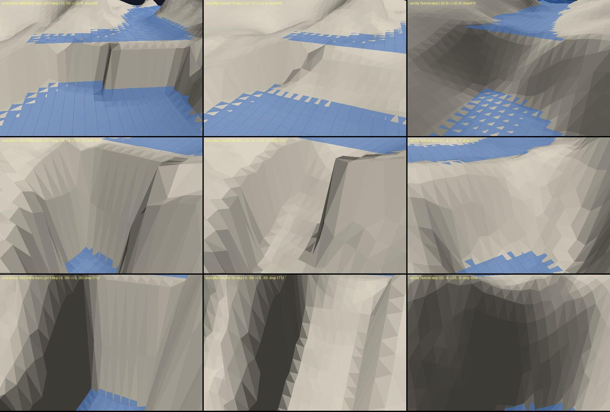
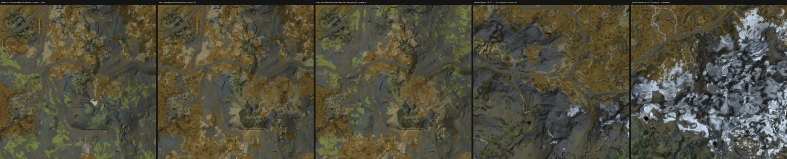
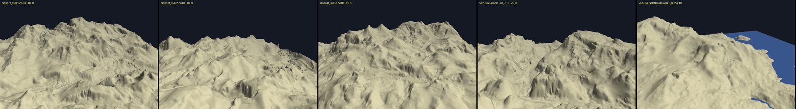
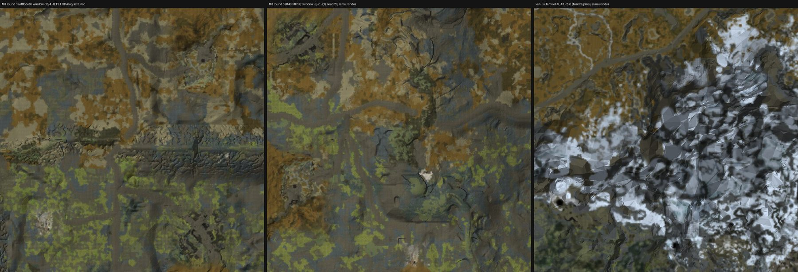

Project log ·
Skyrim Creation Kit MCP log: October 29, 2026
One week into the Skyrim Creation Kit MCP Server: waterfalls reworked, biomes placed from the land instead of the map, and a new desert scene. Below are the status of every part on that day, the timeline so far, and what came next.
Where things stand
Status, October 29.
Most of the pipeline now runs end to end. The current work fixes what James flagged in the last review, then builds the next test region on the new biomes.
| Part | State | Latest result |
|---|---|---|
| Terrain generator | Approved | Eight scene types quilted from vanilla Skyrim terrain pieces. James: “I think this looks amazing.” |
| Waterfalls | Reworked today | Smooth humps replaced by broken rock steps and a plunge pool; size and steepness now within vanilla’s typical spread. |
| Desert scene | New today | Built from the Reach’s badlands, Eastmarch’s volcanic flats and Solstheim’s ash plains. Stand-in until custom desert models arrive. |
| Biomes | New today | Placed from the scene type and the terrain, never from map position. No more straight borders. |
| Test region (M3) | Round 6 building | Round 5 is the approved baseline. Round 6 rebuilds it on the new biomes and fixes the site-ground squares. |
| Joined regions | Working | Three regions built separately and joined with 0 seam differences; navmesh connects across. |
| Site plan | Revising | Learned from 279 Tamriel sites. Being changed so cities only go on ground as good as vanilla’s city sites. |
| Road network | Revising | Learned from Skyrim’s 78 km of roads. Fords and smoother hairpins in progress. |
| Caves and ruins | Round 3 | Generated from Bethesda’s kit pieces. Round 3 adds open caverns. |
| Site variation | Awaiting review | Farms and forts re-laid-out and re-dressed with swapped building and fence kits. |
| In the game | This week | The test harness boots and restores Skyrim reliably; walking the generated region in game is next. |
Landed on October 29
Waterfalls, biomes and a desert scene.
Three changes landed and were verified that morning. Each is shown beside vanilla Skyrim.

Median face steepness fell from 75° to 39° (vanilla: 27°), and the biggest single step on a waterfall face from 672 to 200 units (vanilla: 164). The full before/after measurements are in the rivers, lakes and waterfalls section of the project page.

Biomes are now placed from the scene type and the shape of the land, never from map position. In the test region the longest straight run of biome border fell from 17 km to 12 km (vanilla areas: 14–34 km). See how terrain-driven biomes work.

The desert scene is a stand-in built from the Reach’s badlands, Eastmarch’s volcanic flats and Solstheim’s ash plains until custom models arrive. More on new biomes such as Anequina.

Timeline
Seven days in.
From an empty repository on October 23 to generated worlds with transplanted towns.
- FoundationsPlugin writing and Mutagen read-back, the Creation Kit sandbox, the first MCP tools.
- Milestone 1: HelgenThe whole fort town transplanted into a new worldspace with terrain and navmesh. Accepted.
- Region pieces acceptedRoads with blended shoulders, lakes and coast, biomes, site variation, Fort Greymoor with doors and bandits, the Guldun Rock cave, distant LOD, regions and map markers. M3 round 3 became the best region so far, but its mountains weren’t Skyrim’s.
- The terrain redesignTwo prototypes; James chose quilting from vanilla terrain: “so much better… not all mountains anymore.” Ported into the pipeline the same night.
- Ten items in one nightPer-scene layouts, M3 round 5 on the new terrain, the dungeon generator, a site planner, a road planner, joined regions, site variation round 4, desert flora intake, the critic. James approved all recommended options in the morning.
- Biomes, desert, waterfallsBiomes from the scene type, the desert scene and the waterfall rework landed and were verified. M3 round 6, caverns and the plan fixes are in progress.
Next
Next steps after October 29.
In order:
| 1 | M3 round 6 on the new biomes, with site ground blended into its surroundings. |
| 2 | First in-game walk of a generated region with the test harness. |
| 3 | Cities on their best ground, fords and smoother roads; then a full generated world tile by tile from a site and road plan. |
| 4 | Open caverns and Nordic ruins at vanilla quality, linked to the overworld. |
| 5 | Custom desert models for Anequina: dunes, mesas and dry riverbeds. |
The whole project
Skyrim Creation Kit MCP Server.
Terrain, rivers, biomes, transplanted sites, roads, caves, verification and how the project is built, with every picture beside vanilla.